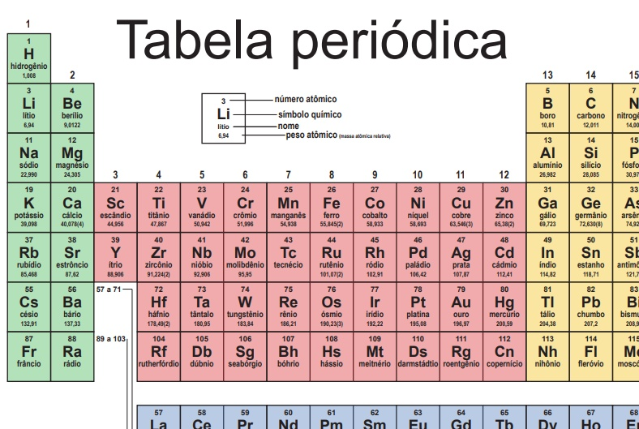

A Química estuda a matéria e as transformações sofridas por ela. A matéria, por sua vez, é tudo aquilo que ocupa lugar no espaço e que, portanto, possui massa e volume. Ela pode ser encontrada de duas formas básicas: substâncias e misturas.
uma substância configura-se quando determinado material é formado somente por um tipo de componente (que pode ser partículas como átomos, moléculas, fórmulas unitárias, elétrons ou íons) e, como resultado, apresenta propriedades físicas, como ponto de fusão, ponto de ebulição e densidade, fixas e bem definidas.
Já as misturas são sistemas formados por duas ou mais substâncias compostas ou simples que sejam diferentes. Dessa forma, apresentam as propriedades físicas não definidas e variáveis. Essas propriedades dependem da quantidade de cada substância na mistura e da natureza delas
AtomisticaA atomística é a parte da Química que trata do estudo do átomo e suas características. Cabe a esse segmento definir a estrutura atômica, bem como o histórico de elaboração dos nossos modelos atômicos, os tipos de semelhanças entre os átomos, a representação dos elementos químicos e as notações envolvidas.
O átomo é a unidade básica da matéria que compõe todas as substâncias existentes. A palavra átomo é de origem grega e significa “sem parte” ou “indivisível”. Atualmente, já são conhecidas as chamadas partículas subatômicas, que comprovam que o átomo é divisível, porém foi mantido seu nome, devido ao tempo que vinha sendo utilizado.
Tabela PeriodicaA Tabela Periódica é um modelo que agrupa todos os elementos químicos conhecidos e suas propriedades. Eles estão organizados em ordem crescente de números atômicos (número de prótons).
 Ligações IonicasLigação iônica é um dos três tipos de interação entre dois átomos (as outras ligações são a covalente e a metálica). Na ligação iônica, um dos átomos é obrigatoriamente um metal, e o outro, um ametal ou o hidrogênio.
Os princípios que fundamentam uma ligação iônica são apenas dois: a perda de elétrons por um átomo (de caráter metálico elevado) e o ganho desses elétrons por outro átomo (de caráter ametálico elevado).
Compostos QuimicosUm composto químico é uma substância química constituída por moléculas ou cristais de dois ou mais átomos ou íons de elementos diferentes que se ligam entre si. As proporções entre elementos de uma substância não podem ser alterados por processos físicos e ligados numa proporção fixa e definida. Por exemplo, a água é um composto formado por hidrogênio e oxigênio na proporção de dois para um.
Em geral, esta razão fixa deve-se a uma propriedade física (formada por moléculas com ligações químicas estáveis) e não a uma seleção humana arbitrária. Por este motivo o bronze ou o chocolate são misturas ou ligas metálicas e não compostos.